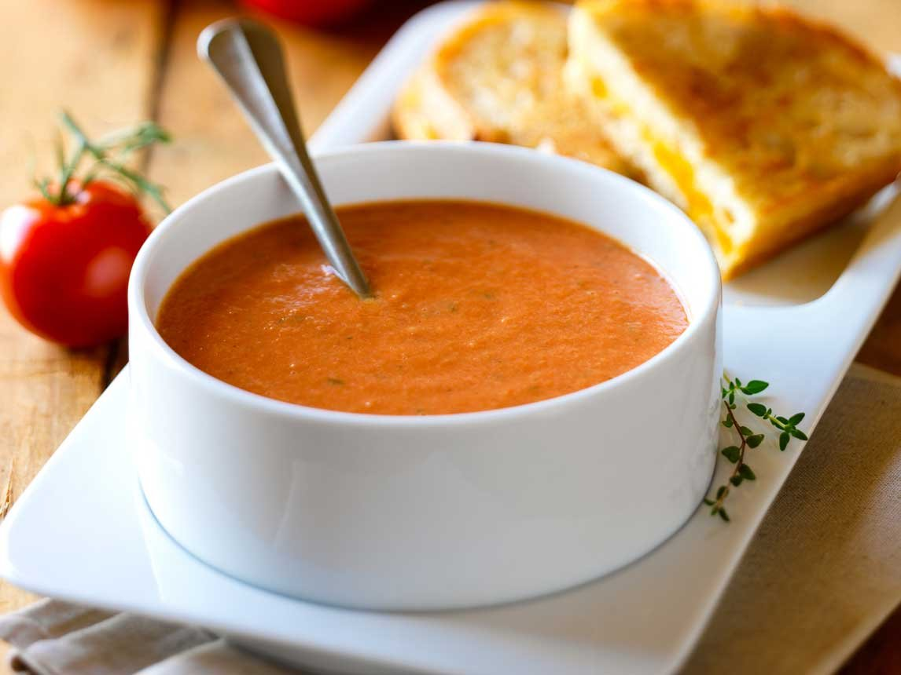

Lentil Soup
This soup is made with lentils, vegetables, and a flavorful broth. It's a hearty and healthy meal option.
Ingredients
- 1 cup lentils
- 1 onion, chopped
- 2 carrots, chopped
- 2 celery stalks, chopped
- 1 (14.5 ounce) can diced tomatoes
- 1 (15 ounce) can vegetable broth
- 1/2 teaspoon salt
- 1/4 teaspoon black pepper
Instructions
- In a large pot, combine the lentils, onion, carrots, celery, diced tomatoes, vegetable broth, salt, and pepper.
- Bring to a boil, then reduce heat to low and simmer for 20 minutes, or until the lentils are tender.
- Puree the soup with an immersion blender or in a blender until smooth.
- Serve hot.
Enjoy!